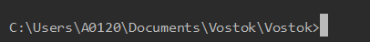
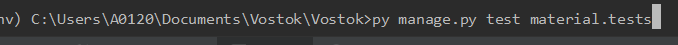
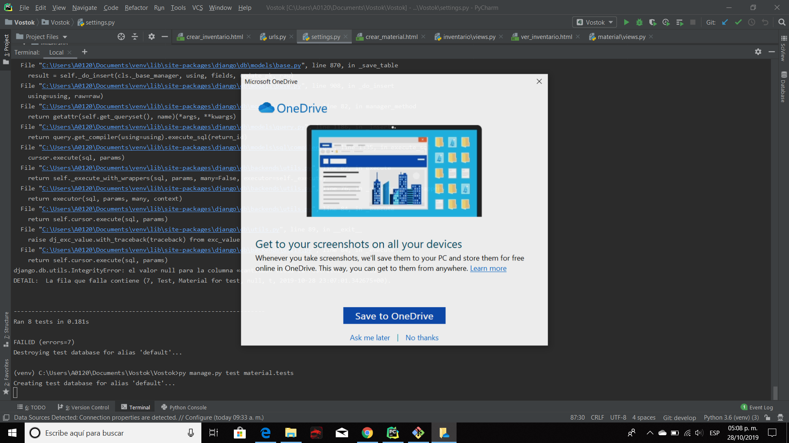
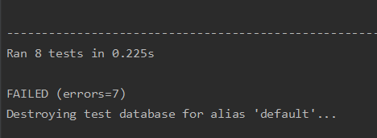

Guía para ejecución de pruebas y rollback
Objetivo
Enseñar al usuario de que manera probar el sistema, reportar algún fallo en caso de que ocurra y regresar a una versión anterior.
Pasos para la ejecución de pruebas:
- Ejecutar todas las pruebas automatizadas
- Primero, es necesario entrar a la terminal y entrar a la carpeta donde esta el manage .py. Ejemplo:

- Escribir en la terminal py manage.py test <nombre de la aplicación>.tests

- El sistema creará una base de datos alterna donde se probarán todos los test que contenga la aplicación.

- Al finalizar, el sistema dará un resultado acerca si los test fueron exitosos o no.

- De ser necesario para hacer rollback a la versión del sistema estable anterior (en test)
- git log, para ver el commit al que se desea regresar
- Una vez que se conozca el commit al que se desea regresar, tomar el hash.
- Para revertir el último commit hecho y volver a la versión anterior, se puede hacer lo siguiente, “git reset --hard <commit hash>”.
- Ejemplo: git reset --hard a0fvf
- Pruebas de funcionalidad a las funcionalidades desarrolladas en la iteración
- Para completar la prueba del sistema se deberá de probar la funcionalidad de cada una de las User Stories desarrolladas en la iteración.
- Recopilar los resultados de las pruebas
- Una vez que las pruebas han sido ejecutadas de manera completa, se debe llenar un reporte con los resultados totales de las pruebas corridas.
- El reporte debe incluir:
- El total de pruebas corridas.
- Cuántas de estas pruebas pasaron con éxito.
- Cuántas de estas pruebas fallaron.
- Porque falló la prueba.
- Cuantos bugs se encontraron y cuales fueron.